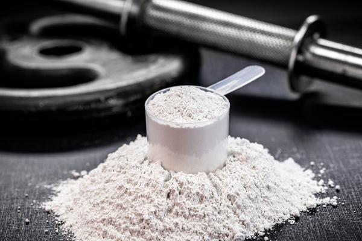

1. Creatina Monohidrato: El Suplemento Rey
La creatina es, probablemente, el suplemento más investigado y efectivo en el mercado para mejorar el rendimiento. Es un compuesto natural que se encuentra en tus células musculares.
¿Cómo Funciona?
Tu cuerpo usa ATP (Adenosín Trifosfato) como su fuente principal de energía rápida. Cuando entrenas con pesas o haces sprints, tu reserva de ATP se agota rápidamente. La creatina ayuda a regenerar el ATP más rápido.
- Resultado Práctico: Te permite realizar una o dos repeticiones extra en tus series pesadas y mejorar tu rendimiento en ejercicios de alta intensidad y corta duración.
- Aumento de Fuerza: Permite entrenar con mayor calidad, lo que a largo plazo se traduce en mayor ganancia muscular y de fuerza.
Dosis y Uso Recomendado
La clave de la creatina es la **consistencia diaria**. Puedes ver un bote de creatina con el polvo blanco listo para usar.

- Dosis Estándar: 5 gramos al día, todos los días (tanto de entrenamiento como de descanso).
- El "Cuándo": El momento del día es irrelevante. Tómala cuando te sea más fácil recordar.
- Fase de Carga (Opcional): Para saturar los músculos más rápido, puedes tomar 20 gramos al día durante 5 a 7 días, y luego pasar a la dosis de mantenimiento de 5g.
2. Proteína Whey (Suero de Leche): Nutrición de Conveniencia
La proteína en polvo no es un suplemento "mágico" para ganar músculo, sino una **fuente de macronutriente de alta calidad y muy conveniente** que facilita alcanzar tu cuota diaria de proteína, tal como se ve en esta toma donde se prepara un batido.
¿Cuál es su Objetivo?
En el contexto de tu dieta de Smart Fitness, la proteína en polvo te ayuda a lograr el objetivo de **1.6 a 2.2 gramos de proteína por kg de peso corporal**.
La proteína es esencial para la reparación muscular. El batido es una forma rápida de consumirla.

Cuándo y Cuánto Tomar
- No Reemplaza la Comida: Un batido no es mejor que una comida completa, pero es mucho más rápido y fácil de consumir cuando tienes prisa.
- Dosis: Una porción típica (scoop) contiene entre 20g y 30g de proteína. Tómala según la necesites para alcanzar tu meta diaria de macros.
- Mejor Momento: Es ideal para el "post-entreno" si no tienes una comida completa planeada, o para el desayuno.
Conclusión: La creatina te da un empujón de rendimiento, y la proteína te facilita la vida para cumplir tu objetivo de macros.